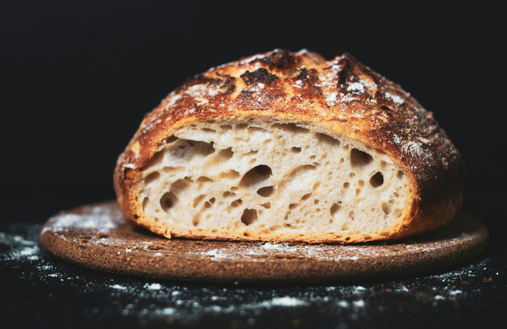

One wood oven and a starter we’ve fed since 1998.
Reserve a loafBefore ten. Pay when you collect.

Rua do Almada 112Porto, one street from Aliados
Tuesday to Sunday7am until it’s gone
One wood oven and a starter we’ve fed since 1998.
On Sunday the last loaf went at 11:52.